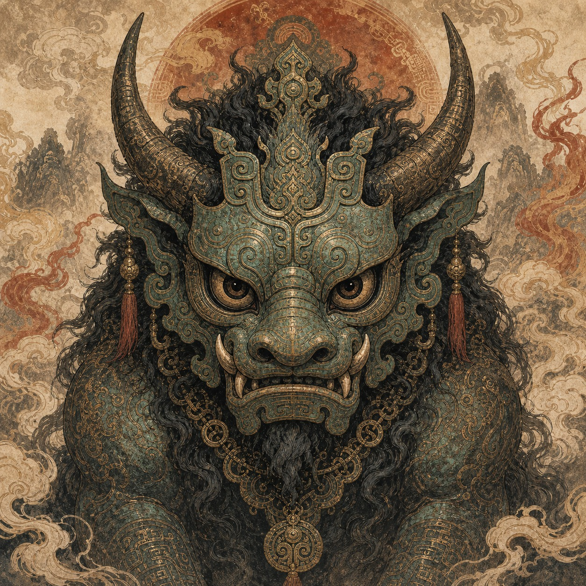
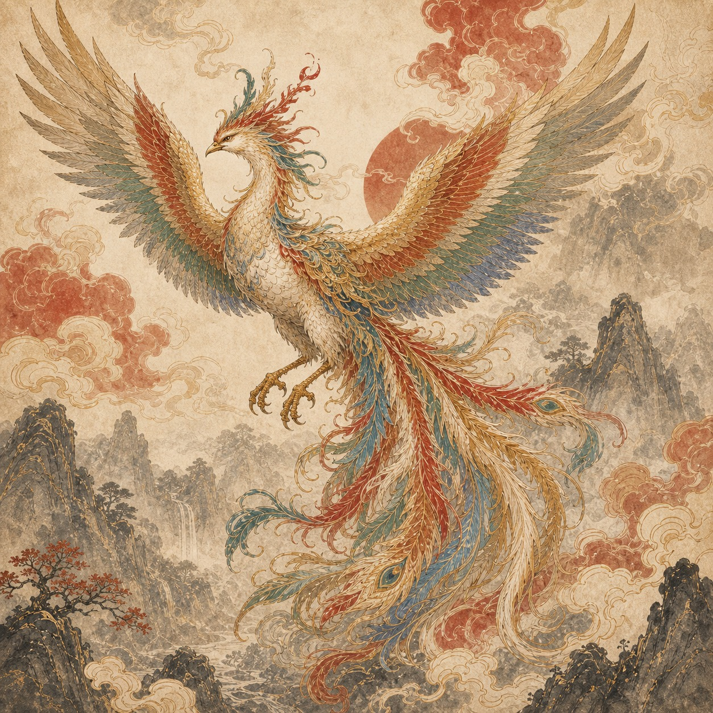
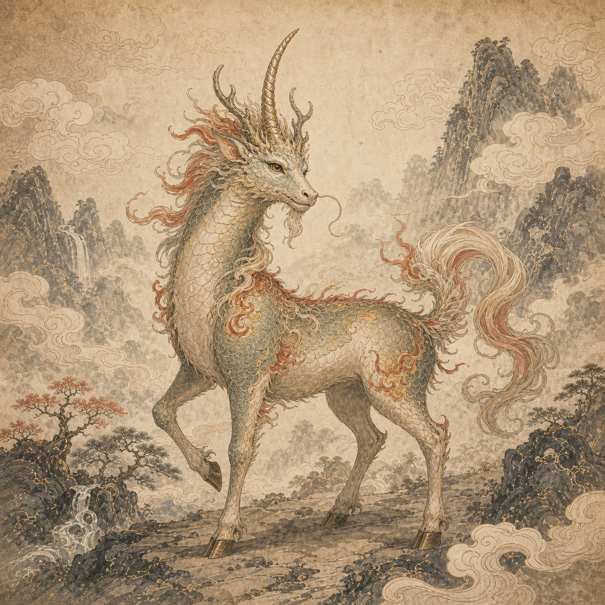

从原典摘读、山川路线、神兽图像到后世纹样，整理《山海经》异兽背后的文化脉络。
每个分类保持不少于 5 条内容线索，便于后续继续扩展成详情页。
集中整理九尾狐、凤凰、旋龟、精卫等条目的出处、原文、白话说明和页面联动方式。
从“文首、白喙、赤足”的形态描述，延伸到坚持、补偿与神话伦理。
以丹穴之山凤皇为中心，说明五色纹样、礼乐秩序和安宁象征。
把应龙放回大荒叙事，理解雨、旱、战争与英雄神话之间的关系。
夔一足、声如雷的形象，适合转译为音浪、鼓纹与地图点位动效。
九尾狐、凤凰、旋龟等点位的路线式阅读
矿物、玉石与赤豹异兽的空间组合
蠃鱼、水患、穷奇食人的灾异线索
应龙、夔等不并入现代坐标的神话空间

借青铜器纹饰强化祭祀与古籍感

从五采而文到现代卡片色彩系统

把凶异、祥瑞与科普语气区分开
用标签区分原文明确与资料整理
 山海异兽录山海经神兽图鉴科普网站
山海异兽录山海经神兽图鉴科普网站